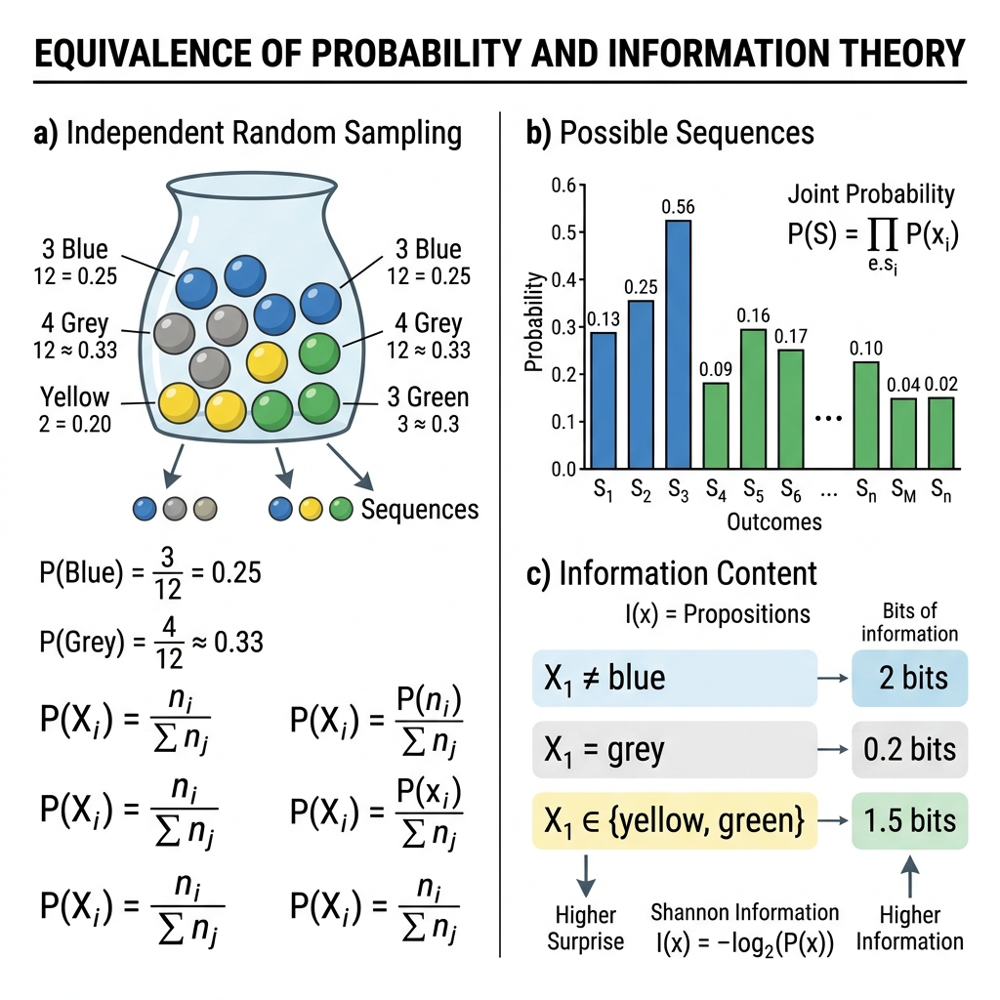

Information Theory Basics#
Although originating from telecommunications engineering (by Claude Shannon), Information Theory has incredibly deep mathematical connections to Probability. In modern Deep Learning and Machine Learning, concepts from information theory are used as the default Loss functions for almost all Classification problems.
This chapter will visually explain Entropy, Cross-Entropy, and KL Divergence.
1. Information Content#
Imagine you are waiting for the outcome of an event.
If that event is 100% certain to happen (e.g., “The sun rises in the East”), when it actually happens, you gain no new information.
Conversely, if that event is very rare (e.g., “Winning the lottery jackpot”), when it happens, you receive a massive amount of information.
Mathematically, the Information Content (\(I\)) of an event \(x\) (with probability \(P(x)\)) is defined as inversely proportional to its probability:
Note: We use base 2 to measure in units of bits (as in computers).
2. Equivalence of Probability and Information#
There is a direct mathematical equivalence between probability, uncertainty, and information. Whenever we reduce uncertainty about an outcome by eliminating alternative possibilities, we are gaining information.

Fig. 16 Visualizing the equivalence of probability reduction and information gain.#
As illustrated in the diagram above:
a) Independent Random Sampling: Consider drawing colored marbles from an urn with replacement. The probabilities are:
\[p(\text{blue}) = \frac{1}{2}, \quad p(\text{grey}) = \frac{1}{4}, \quad p(\text{yellow}) = \frac{1}{8}, \quad p(\text{green}) = \frac{1}{8}\]b) 2-Sequences Distribution: Shows the combined joint probability distribution of drawing two marbles consecutively (\(X_1, X_2\)), yielding 16 possible outcomes.
c) Information Content of Propositions: By learning a proposition about the two draws is true, we eliminate certain possible outcomes, reducing the probability mass and gaining information:
Proposition \(X_1 \neq \text{blue}, X_2 \neq \text{blue}\): Eliminates all sequences containing blue marbles. The remaining probability mass is \(\frac{8}{32}\) (a 75% reduction), yielding exactly 2 bits of information.
Proposition \(X_1 \neq \text{green}\): Eliminates green outcomes. The remaining probability mass is \(\frac{28}{32}\), yielding only 0.2 bits of information (since green was already rare).
Proposition \(X_1 = X_2\): Learning that both marbles have the same color has a probability of \(\frac{11}{32}\), yielding 1.5 bits of information.
Core Rule: Eliminating probability mass, reducing uncertainty, and gaining information are mathematically equivalent. A 50% reduction in the remaining probability mass corresponds to exactly 1 bit of information gained.
3. Entropy (Uncertainty / Chaos)#
While \(I(x)\) only measures the information content of a single specific event, Entropy (\(H\)) measures the expected information content of the entire probability distribution. In other words, Entropy measures the level of “uncertainty” or “chaos” of a random variable \(X\).
Note
Mathematical Edge Cases & Practical Notes:
Convention for \(0 \log_2 0\): By convention, \(0 \log_2(0) = 0\) because \(\lim_{p \to 0^+} p \log_2(p) = 0\).
Base 2 vs. Natural Log:
Base 2 (\(\log_2\)) measures information in bits (standard in pure Information Theory).
Natural log (\(\ln\)) measures information in nats (standard in Machine Learning frameworks like PyTorch and TensorFlow for loss computations).
Low Entropy: The system is very predictable (high certainty). Example: A rigged coin that always lands on Heads (\(P(H) = 1, P(T) = 0\)). In this case, \(H(X) = 0\).
High Entropy: The system is completely chaotic and most unpredictable. Example: A fair coin (\(P(H) = 0.5, P(T) = 0.5\)). In this case, \(H(X)\) reaches its maximum.
4. Cross-Entropy#
Cross-Entropy answers the question: If the true data follows distribution \(P\), but we assume it follows an approximate distribution \(Q\), how many bits on average do we need to encode the information?
In Machine Learning:
\(P\) (True distribution): The actual distribution of the data (usually ground-truth labels, e.g.,
[1, 0, 0]for a picture of a dog).\(Q\) (Predicted distribution): The distribution predicted by the AI model (e.g.,
[0.7, 0.2, 0.1]).
The goal of an ML model is to make \(Q\) as similar to \(P\) as possible. When \(Q = P\), Cross-Entropy reaches its minimum value (which is exactly the Entropy of \(P\)). Therefore, Cross-Entropy Loss is used as the loss function to optimize Neural Networks in Classification problems.
5. Kullback-Leibler (KL) Divergence (Distribution Distance)#
KL Divergence (KLD) measures the difference between two probability distributions \(P\) and \(Q\). It answers the question: By using \(Q\) instead of \(P\), how much extra information content are we wasting?
Important Properties:
\(D_{KL}(P || Q) \ge 0\). It is only equal to 0 when \(P\) and \(Q\) are identical.
It is not symmetric: \(D_{KL}(P || Q) \neq D_{KL}(Q || P)\). Therefore, it is not a true “distance metric” in a geometric sense.
In Machine Learning (especially Generative AI like VAEs - Variational Autoencoders or t-SNE), KLD is used as a Loss function to force the predicted distribution \(Q\) (latent space) to closely match a standard distribution \(P\).
Illustration with Python#
How to calculate Entropy and KL Divergence using Numpy and Scipy.
import numpy as np
from scipy.stats import entropy
# Distribution P (actual - ground truth)
P = np.array([0.8, 0.15, 0.05])
# Distribution Q (prediction from model 1 - quite good)
Q1 = np.array([0.7, 0.2, 0.1])
# Distribution Q (prediction from model 2 - very bad)
Q2 = np.array([0.2, 0.3, 0.5])
# 1. Calculate Entropy of P (base 2)
# entropy() in scipy defaults to natural log (ln), we change the base with base=2
H_P = entropy(P, base=2)
print(f"Entropy H(P): {H_P:.4f} bits")
# 2. Calculate KL Divergence: D_KL(P || Q1) and D_KL(P || Q2)
kl_1 = entropy(P, qk=Q1, base=2)
kl_2 = entropy(P, qk=Q2, base=2)
print(f"KL Divergence (P || Q1): {kl_1:.4f} bits (Good model, small KLD)")
print(f"KL Divergence (P || Q2): {kl_2:.4f} bits (Bad model, large KLD)")
# 3. Calculate Cross-Entropy H(P, Q) = H(P) + D_KL(P || Q)
ce_1 = H_P + kl_1
print(f"Cross-Entropy H(P, Q1): {ce_1:.4f} bits")